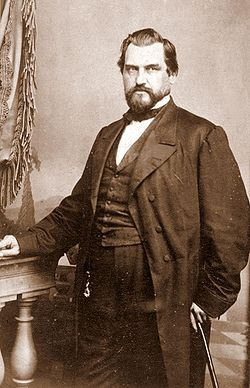

Stanford was born in 1824 in what was then Watervliet, New York (now the Town of Colonie). He was one of eight children of Josiah and Elizabeth Phillips Stanford. Among his siblings were New York State Senator Charles Stanford (1819–1885) and Australian businessman and spiritualist Thomas Welton Stanford (1832–1918). His immigrant ancestor, Thomas Stanford, settled in Charlestown, Massachusetts, in the 17th century.Later ancestors settled in the eastern Mohawk Valley of central New York about 1720.
Stanford's father was a farmer of some means. Stanford was raised on family farms in the Lisha Kill and Roessleville (after 1836) areas of Watervliet. The family home in Roessleville was called Elm Grove. The Elm Grove home was razed in the 1940s. Stanford attended the common schools until 1836 and was tutored at home until 1839. He attended Clinton Liberal Institute, in Clinton, New York, and studied law at Cazenovia Seminary in Cazenovia, New York, in 1841–45. In 1845, he entered the law office of Wheaton, Doolittle and Hadley in Albany.
After being admitted to the bar in 1848, Stanford migrated with many other settlers, moving to Port Washington, Wisconsin, where he began law practice with Wesley Pierce. His father presented him with a law library said to be the finest north of Milwaukee. In 1850, Stanford was nominated by the Whig Party as Washington County, Wisconsin district attorney.
On September 30, 1850, Stanford married Jane Elizabeth Lathrop in Albany, New York. She was the daughter of Dyer Lathrop, a merchant of that city, and Jane Anne (Shields) Lathrop. The couple did not have any children for years, until their only child, a son, Leland DeWitt Stanford, was born in 1868 when his father was forty-four.Businesses
In 1852, having lost his law library and other property to a fire, Stanford followed his five brothers to California during the California Gold Rush. His wife, Jane, returned temporarily to Albany and her family. He went into business with his brothers and became the keeper of a general store for miners at Michigan City, California, later the name changed to Michigan Bluff in Placer County; later he had a wholesale house. He served as a justice of the peace and helped organize the Sacramento Library Association, which later became the Sacramento Public Library. In 1855, he returned to Albany to join his wife but found the pace of Eastern life too slow after the excitement of developing California.
In 1856, he and Jane moved to Sacramento, where he engaged in mercantile pursuits on a large scale. Stanford was one of the four major businessmen known popularly as "The Big Four" (or among themselves as "the Associates") who were the key investors in the Central Pacific Railroad, which they incorporated on June 28, 1861, and of which Stanford was elected president. His other three associates were Charles Crocker, Mark Hopkins, and Collis P. Huntington. They hired Theodore Dehone Judah as the chief engineer.
Stanford ran unsuccessfully for governor of California in 1859. He was nominated again in 1861 and was elected. He served one term, then limited to two years.
The railroad's first locomotive, named "Gov. Stanford" in his honor, is on display today at the California State Railroad Museum in Sacramento.
In May 1868, he joined Lloyd Tevis, Darius Ogden Mills, H.D. Bacon, Hopkins, and Crocker in forming the Pacific Union Express Company. It merged in 1870 with Wells Fargo and Company. Stanford was a director of Wells Fargo and Company from 1870 to January 1884. After a brief retirement from the board, he served again from February 1884 until his death in June 1893.
While the Central Pacific was under construction, Stanford and his associates in 1868 acquired control of the Southern Pacific Railroad. Stanford was elected president of the Southern Pacific, a post he held until 1890 (except for a brief period in 1869-70 when Tevis was acting president), when he was ousted by Collis Huntington.
As head of the railroad company that built the western portion of the "First Transcontinental Railroad" over the Sierra Nevada mountains in California, Nevada, and Utah, Stanford presided at the ceremonial driving of "Last Spike" in Promontory, Utah on May 10, 1869. The grade of the CPRR met that of the Union Pacific Railroad, which had been built west from its western terminus at Council Bluffs, Iowa/Omaha, Nebraska.
Stanford moved with his family from Sacramento to San Francisco in 1874, where he assumed presidency of the Occidental and Oriental Steamship Company, the steamship line to Japan and China associated with the Central Pacific.
The Southern Pacific Company was organized in 1884 as a holding company for the Central Pacific-Southern Pacific system. Stanford was president of the Southern Pacific Company from 1885 until 1890, when he was forced out of that post (as well as the presidency of the Southern Pacific Railroad) by Collis Huntington. This was thought to be retaliation for Stanford's election to the United States Senate in 1885 over Huntington's friend, A. A. Sargent.
Stanford was elected chairman of the Southern Pacific Railroad's executive committee in 1890, and he held this post and the presidency of the Central Pacific Railroad until his death